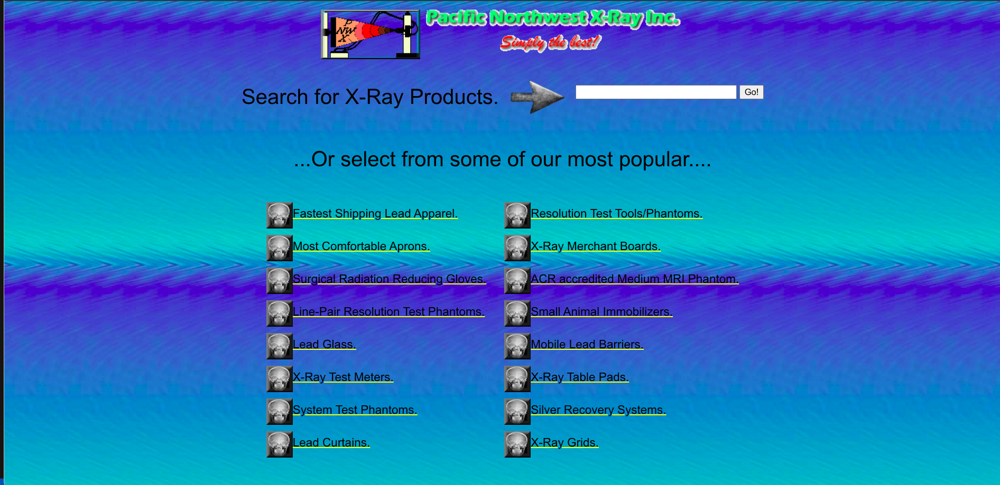

UI/UX Analysis: gpsGuide Case Study
Transforming poor user experiences into intuitive, professional interfaces

Needs Improvement
Original interface with multiple UX issues
Critical UX Failures
- Confusing Branding: "Pacific Northwest Maryland" geographic contradiction
- Poor Visual Hierarchy: No clear categories or grouping of products
- Inconsistent Formatting: Mixed bullet styles and random line breaks
- Unprofessional Presentation: Looks like raw notes instead of designed interface
- No Visual Elements: Pure text with no images, icons, or color
- Weak Information Architecture: Medical products scattered without logical order
- Missing Navigation: No search functionality despite "Search for X-Ray Products" header
- Poor Readability: Dense text blocks with inadequate spacing
Proposed Solutions
- Clear Brand Identity: Resolve geographic confusion with proper company name
- Visual Product Categories: Group related items with icons and card-based layout
- Implement Actual Search: Functional search bar with filters and suggestions
- Professional Typography: Consistent hierarchy with proper headings and spacing
- Product Imagery: Add relevant images for each medical equipment category
- Grid Layout: Organized product display with clear categories (Protective Gear, Test Tools, etc.)
- Color & Branding: Professional color scheme reflecting medical/industrial sector
- Mobile Responsive: Adaptive design for different screen sizes
Technical Implementation
Enterprise-grade software configuration management pipeline
Our comprehensive SCM solution ensures quality at every stage of development
GitHub Pages Hosting
Secure and scalable deployment
CI/CD Pipeline
Automated testing and deployment
Code Quality Gates
Enforce standards automatically
Auto Deployment
Seamless production releases